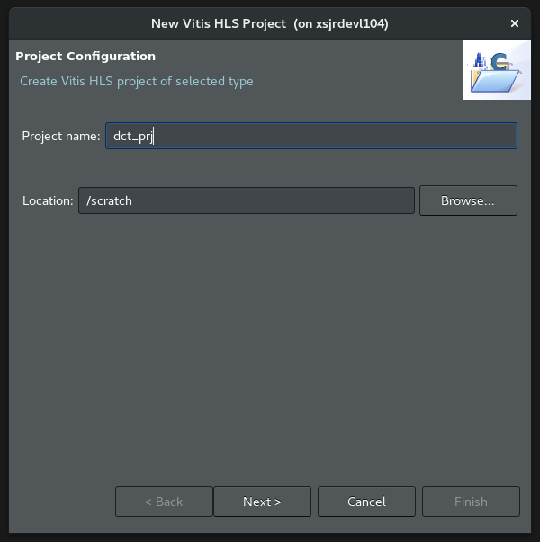
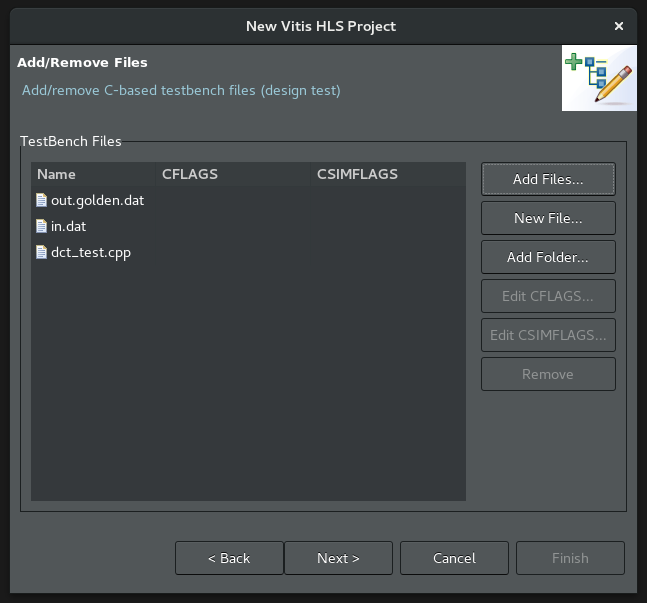
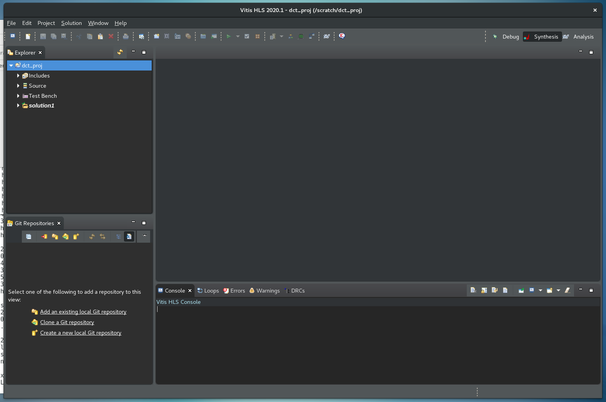

2020.1 Vitis™ Application Acceleration TutorialsSee 2019.2 Vitis Application Acceleration Development Flow Tutorials |
1. Creating a Vitis HLS Project¶
The Vitis HLS tool lets you specify C/C++ code for synthesis into Vitis core development kit kernels (.xo) or RTL IP for implementation in the PL region of Xilinx devices. The first step in creating a new project is identifying the C/C++ source code for synthesis.
In this tutorial, you are working with a simple discrete cosine transform (DCT) algorithm that processes an input matrix of values, applies fixed coefficients, and returns a matrix of modified values. In the reference_files/src folder, the dct.cpp contains the top-level DCT function.
Enter the following command to launch Vitis HLS in GUI mode.
vitis_hlsVitis HLS opens.
Select File > New Project.
The New Vitis HLS Project wizard is displayed.

Create the Vitis HLS project type:
In the Project name field, enter
dct_prj.In the Location field, click Browse to select the location for the project.
Click Next>.
The Add/Remove Files page of the New Project wizard displays.

Make the following selections:
Select Add Files to specify source files for the project.
Navigate to the ./reference-files/src folder location, and select dct.cpp.
In the Top Function field at the top of the New Project wizard, select the Browse… button to open the Select Top Function dialog box, as shown below.
Select the dct (dct.cpp) function and click OK.

Click Next>.
The Add/Remove Testbench Files page of the New Project wizard displays.
Writing a good testbench can greatly increase your productivity because C functions execute in orders of magnitude faster than RTL simulations. Using C to develop and validate the algorithm before synthesis is much faster than developing and debugging RTL code. For more information, refer to Writing a Testbench in the Vitis HLS Flow of the Vitis Unified Software Platform Documentation (UG1416).

Select Add Files to specify the testbench, and additional files for the project.
Navigate to the
./reference-files/srcfolder, and select dct_test.cpp, in.dat and out.golden.dat.dct_test.cppis a test bench for the design that iterates through the kernel multiple times.in.datprovides the input values to be processed by the kernel.out.golden.datprovides known output results to use for comparing the output of the dct function against.
Click Next>.
The Solution Configuration page of the New Project wizard is opened as shown below.
The Solution Configuration creates and defines a solution which is a specific build configuration that the tool uses to build against. The solution includes definitions for the clock period, and clock uncertainty, and specifies a platform, with a Xilinx device, to build against. The solution provides you a framework for building your RTL code, and testing different optimizations by using different directives (possibly in different solutions).

Make the following selections:
Specify the Solution Name, or use the default name.
Specify the Period for the clock as the default period of 10 ns.
Specify the clock uncertainty as the default uncertainty of 12%, or simply leave it blank. For more information, refer to Specifying the Clock Frequency in the Vitis HLS Flow of the Vitis Unified Software Platform Documentation (UG1416).
Define the part for the project by selecting the ….
This opens the Device Selection dialog box.

The Device Selection dialog box lets you specify a Xilinx device for the project or a board containing one or more Xilinx devices.
Make the following selections:
Select Board at the top of the dialog box.
In the Search field, enter
U200. The selections are narrowed as you enter the search text.Select Alveo U200 Data Center Accelerator Card.
Click OK.
You are returned to the Solution Configuration dialog window.
In the Solution Configuration dialog box, select the Vitis Kernel Flow from the dropdown menu.
This enables the creation of a Vitis application acceleration hardware kernel (.xo) as an output for the project. For more information on how enabling the Vitis kernel flow configures the default behavior of the tool, refer to Enabling the Vitis Kernel Flow in the Vitis HLS Flow of the Vitis Unified Software Platform Documentation (UG1416).
With your project settings now configured, click Finish. Vitis HLS opens the new project in the default view.

Conclusion¶
You created the DCT project, targeted your Xilinx device or board, and configured the solution characteristics. You are ready to move to the next lab, Running High-Level Synthesis and Analyzing Results.
Return to Main Page — Return to Start of Tutorial
Copyright© 2020 Xilinx